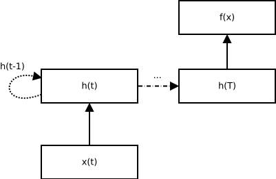
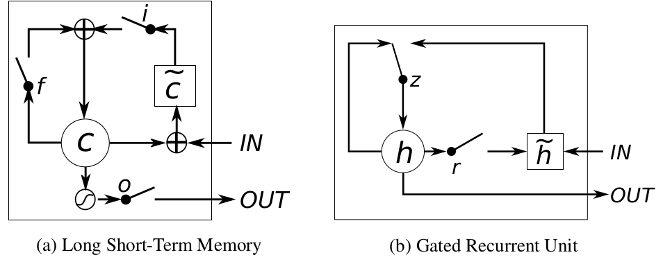
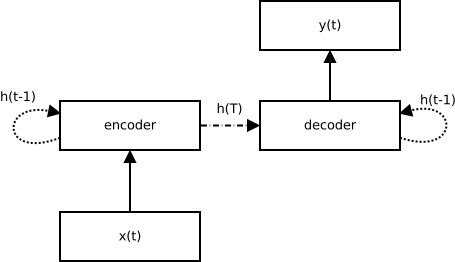
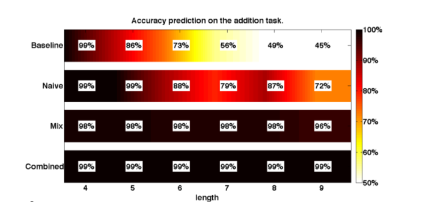
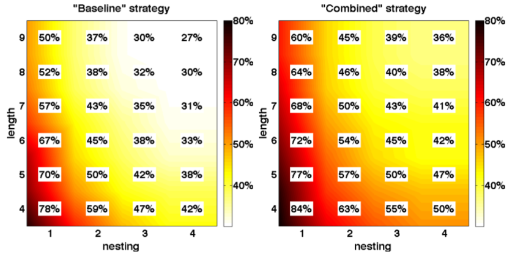

Learning to Execute
by Wojciech Zaremba and Ilya Sutskever
Presented by Emmanuel Bengio $$ \definecolor{black}{RGB}{0,0,0} \definecolor{blue}{RGB}{0,0,255} $$
- Teach you machine learning (but really fast)
- Teach you deep learning (also really fast)
- Explain recurrent neural nets
- Explain the paper
- Criticize the paper
The very broad goal of machine learning is to learn an
A very typical way of phrasing the problem is using parameterized functions: $${\color{red}\mathcal{F}} = \mbox{argmin}_f \; {\color{blue}\mathcal{L}}\left(f,{\color{green}\mathcal{D}}\right)$$ $$\Leftrightarrow$$ $${\color{red}\theta} = \mbox{argmin}_{\color{red}\theta} \; {\color{blue}\mathcal{L}}\left(f_{\color{red}\theta},{\color{green}\mathcal{D}}\right)$$ and now begins the fun of inventing parameterized functions.
Probably the simplest parameterized function/model of them all: $$f({\color{green}x}) = {\color{red}a}{\color{green}x} + {\color{red}b}$$ There are 2 parameters \(a\) and \(b\) $$\theta = \left\{ a,b \right\}$$
A very typical way of phrasing optimisation is
to minimize the
The i.i.d. assumption allows us to approximate the expectation: $${\color{blue}\mathbb{E}}(\mathcal{L}) \approx \sum_{x,y} \mathcal{L}(f(x,\theta),y) $$ and then it's easy* to minimize this.
$${\color{blue}\mathbb{E}}(\mathcal{L}) \approx \sum_{x,y} \mathcal{L}(f(x,\theta),y) $$ One of the many ways of minimizing this is called
gradient descent.
All you need to do is follow
What do you do when you have
*a lot* a data?
Instead of waiting for the whole gradient, update a little bit for each example (or a bunch of them, a minibatch) $$\theta_t \leftarrow \theta_{t-1} - \epsilon {\color{blue}\dd{\mathcal{L}_i}{\theta}}$$ This is typically more efficient in terms of learning speed
What is Deep Learning?
What is Deep Learning?
DL typically refers to a class of model:
Stacked Non-Linearities of Biased Linear Mappings
But nobody calls them that way
What is Deep Learning?
DL typically refers to a class of model:
Stacked Artificial Neural Networks
also called Layers in DL talk
There are many kinds of layers:
- Fully-connected layers $$h = \sigma (xW+b)$$
- Convolutional layers $$h = \sigma(x\ast W + b)$$
- ... and many more
but most of Deep Learning is just variations of these two
In the end you have models that look like this:
$$ f(x) = \sigma_3(\sigma_2(\sigma_1(xW_1+b_1)W_2+b_2)W_3+b_3)$$ and so where $$\theta = \{W_1,b_1, ...\}$$ and all of this is derivable! So you can easily compute gradients
If you have data \(\mathcal{D}= \{(x,y), ...\}\)
and want to minimize the square loss $$ \mathcal{L} = \sum_{x,y\in \mathcal{D}} \sum_i (f(x)_i - y_i)^2 $$ Then do stochastic gradient descent: $$\theta := \theta - \epsilon {\color{blue}\nabla_{\theta}\mathcal{L}_i}$$ Given the right \(\epsilon\) and initialization of \(\theta\), it will converge.
- It works™
- It works™
- It does feature learning for you
- It works™
- It does feature learning for you
- It's not mathematically tricky
- Many libraries
- Many cool applications and more everyday
There are dozens of interpretations for neural nets
- Distributed Representations
- Massive parameter space
- They look like the brain!
- Depth enlarges the function space exponentially
How would you solve a time series problem?
(with a neural network)Instead of a single input, look at a sequence of \(T\) inputs:
- Look at \(x_t\)
- Also look at \(h_{t-1}\)
- \(h_T\) is a function of \(x_{1:T}\)

Simple way of computing \(h_t\): $$h_t = \mbox{tanh}(x W_x + h_{t-1}W_h + b) $$
Problems of such a simple recurrent unit:
- Gradient descent difficult
- Hard to learn long term dependencies
More complex units:

images from Chung, Junyoung, et al. "Empirical evaluation of gated recurrent neural networks on sequence modeling." arXiv preprint arXiv:1412.3555 (2014).
$$ \begin{align*} i_t &= \sigma(x_t W_i + h_{t-1}U_i + b_i)\\ \tilde{c} &= \tanh(x_c W_c + h_{t-1}U_c +b_c)\\ f_t &= \sigma(x W_f + h_{t-1} U_f + b_f) \\ C_t &= i_t \otimes \tilde{c} + f_t \otimes C_{t-1}\\ o_t &= \sigma(xW_o+h_{t-1}U_o+C_tV_o+b_o) \\ h_t &= o_t \otimes \tanh(C_t) \end{align*} $$ ... simple right?

Objective:
- Predict output of a piece of Python code
=,+,-,*,+=,for,if,else,print
Constraints:
- Don't do any feature extraction
- Don't use too much prior knowledge
- Code musn't require more than \(n\) bits of memory
- Code must take linear time
Input and output strings are converted to this form:
$$ x_t = [0,...,0,1,0,...,0]$$ the non-zero index corresponds to the ASCII value
So you could feed Caesar codings to the model!
Plug this into LSTMs!
You need an encoder and a decoder:

Run decoder until it outputs "end-of-line".
Curriculum Learning:
- Start with small simple programs
- Progressively complexify task
Addition:

This is the % of good digits, not the % of good answers
Overall:

This is the % of good digits, not the % of good answers
Why this paper is nice:
- Code is a reasonable domain for RNNs
- With a simple model you can learn typical low-level stuff
- It's a nice showcase of curriculum learning
What seems wrong with this approach?
- Linear time programs
- Constant memory programs
- Still no "reasoning" RNNs
- Too much tinkering of the curriculum learning
- It seems to take a while to train
Thank you for your attention